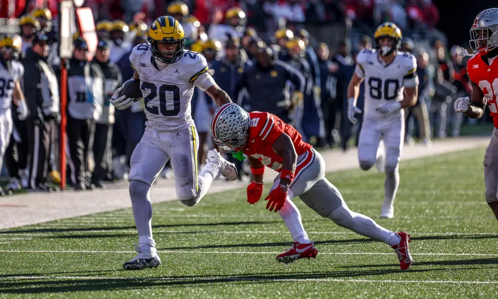
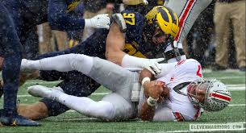
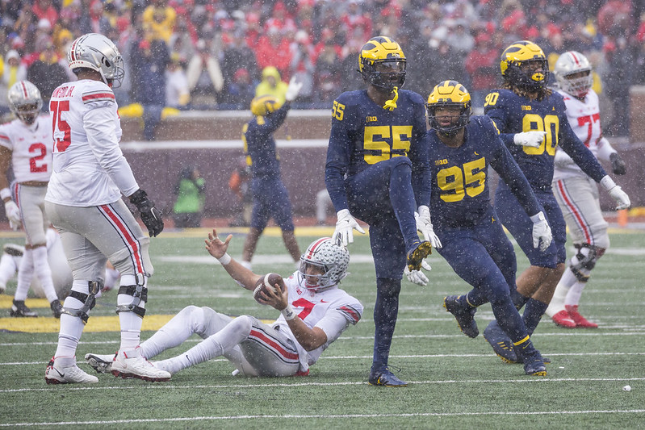
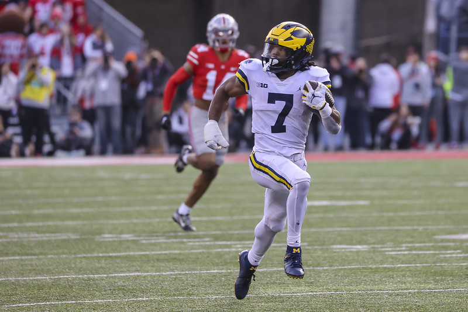
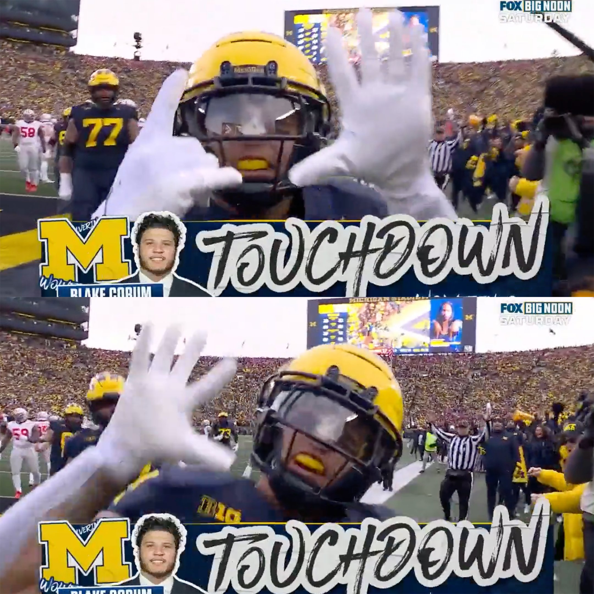
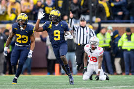

After going through hard times, with occasional high points, the legendary James Joseph Harbaugh led his Wolverines to a National Championship and the first three of four victories over ohio. These are my favorite moments from the past 4 years.
- Aidan Hutchinson and David Ojabo Wrecking ohio in 2021 - starting it all
- Donovan Edwards taking one of his two 70 yarders to the house...
- Blake Corum takes it to the house following Zak Zinter's terrible injury on an inspired run
- Rob Moore intercepts ohio, finishing off the 2023 game
- Kalel Mullings converts a critical first down and more to seal the 2024 victory over the future national champs, whose seniors never beat Michigan. Quite a shame. 




